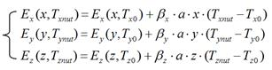

International Journal of Mechanical Engineering and Mechatronics (IJMEM)
ISSN: 1929-2724

Volume 1, Issue 2 Year 2012 - 122-129
DOI: 10.11159/ijmem.2012.015
An Investigation of Thermal Behaviour of a Machine Tool on the Dimensional Accuracy of Parts
Yuxia Lu, M. N. Islam
Department of Mechanical Engineering, Curtin University
Perth, WA 6845, Australia
yuxia.lu@postgrad.curtin.edu.au; m.n.islam@curtin.edu.au
Abstract - The thermal behaviour of machine tools can profoundly affect the dimensional accuracy of manufactured parts. Consequently, reducing its influence has become increasingly important to modern manufacturing. One of the most convenient and effective ways to reduce thermal error and enhance working accuracy is volumetric error compensation, especially for CNC machine tools. However, currently available compensation methods are highly complicated and difficult to apply in industry. They require a high-precision laser interferometer to measure 21 geometric error components and numerous thermocouples to monitor temperature variations. These requirements make such techniques costly and time consuming. This paper describes the development of a simplified and economical method of compensating for thermally induced errors. Compensation is implemented on the basis of only three axial positioning errors, which are assumed to be functions of ball screw nut temperature and travel distance. Instead of an expensive laser interferometer and many thermocouples, a simple laser Doppler displacement meter and only three thermocouples are required for the proposed method. Results show good agreement between measured and predicted thermally induced errors.
Keywords: Thermally Induced Volumetric Error, Positioning Error, Dimensional Accuracy, Laser Doppler Displacement Meter
© Copyright 2015 Authors This is an Open Access article published under the Creative Commons Attribution License terms. Unrestricted use, distribution, and reproduction in any medium are permitted, provided the original work is properly cited.
1. Introduction
Dimensional accuracy is one of the most important quality characteristics in evaluating the acceptability of manufactured parts because of its role in fulfilling the design intent and functional requirements of designed parts. Hence, it has become one of the most critical considerations for manufacturers who want to be competitive in modern industry. Accurate positioning of the cutting tool tip at the command position on a workpiece is key to ensuring the dimensional accuracy of a machined workpiece. However, this task cannot be completed successfully given the built-in errors of the machine tool, such as the machine tool's geometric errors or errors produced during machining. These may also include errors caused by temperature changes and variations in cutting force (Ramesh et al., 2000a, b).
A three-axis machine tool consists of 21 geometric error components, which constitute the majority of machine errors that affect machining accuracy. Schultschik (1977) was the first to develop a general volumetric error model based on homogeneous coordinate transformation. The model is used to calculate the relative error produced between the cutting tool tip and workpiece. As the run time of the machine tool increases, thermally induced errors begin imposing considerable influence over the accuracy of the machined workpiece. Thus, reducing this influence has become increasingly important to modern manufacturing.
One of the most common methods for thermal error reduction is error compensation. Thermal errors are usually predicted using a mathematical model, in which the errors are identified from a group of temperature points related to the increase in thermal errors; then, the thermal errors are combined with the general volumetric error model to form a synthesized model and execute compensation (Lee et al., 1998; Chen et al., 1993; Choi et al., 2003; Kim et al., 2004). However, this method presents various difficulties during industrial application: 1) a laser interferometer necessitates large capital investment because of its high cost; 2) measurement is highly complicated and time consuming (several days for one thermal state); 3) the method requires an experienced and skilful operator to perform the task; and 4) a large number of thermocouples are required for monitoring temperature variations, thereby hindering a machine tool's routine work.
The aim of this research is to develop a simple and economic way to perform thermal error compensation and improve the machining accuracy of existing machine tools. Because a machine's thermal behaviour significantly affects positioning errors—the primary contributor to volumetric error (Venugopal, 1985)—the basic idea of our proposed method is to consider the thermal effects on positioning errors only and assume that a lead screw is a simple linear beam; the linear thermal expansion principle is applied to the lead screw, and then the positioning errors are predicted as functions of ball screw nut temperature and travel distance. This approach eliminates the need for an expensive and complicated laser interferometer. A simple laser Doppler displacement meter (LDDM) is sufficient for the job; instead of employing several thermocouples for a single error component, only one thermocouple attached to the ball screw nut is required for each axis.
2. Thermally Induced Positioning Errors
Positioning error results from slide motion on a lead screw. The majority of thermal error is caused by the thermal expansion of the lead screw. Assuming that the lead screw is a simple linear beam and that temperature is evenly distributed along it, the linear expansion in any point of this screw can be calculated as:
|
|
(1) |
where, a is the coefficient of linear thermal expansion; L denotes the length defined by the location where the expansion is measured; and T is the lead screw temperature.
In Eq. (1), 20 °C is used as the starting point for temperature rise because it is the international standard temperature for describing the length of an object (Bryan, 1990). In practice, however, guaranteeing 20 °C as the initial temperature is difficult to accomplish when measuring original lead screw errors. In Eq. (1), therefore, (T-20) is substituted by (T-T0) in the subsequent prediction model, where T0 is the actual starting temperature.
In CNC machine tools, a ball screw nut continuously moves along the lead screw, thereby causing problems in measuring lead screw temperature during machining. Assuming that the heat from friction between the nut and lead screw is equally dispersed to these two parts, lead screw temperature can be substituted by nut temperature. Nut temperature should be measured at a spot facing the driving motor and as close as possible to the nut–lead screw contact surface.
On the basis of the analysis above, we can represent the prediction model for thermally induced positioning error using the following equations:
|
 |
(2) |
where Ex(x, Txnut), Ey(y, Tynut), and Ez(z, Tznut) are the positioning errors along axes that are functions of axial travel distance and nut temperature; Ex(x, Tx0), Ey(y, Ty0), and Ez(z, Tz0) denote the original positioning errors, which can be measured before machine operation; x, y, and z represent the axial travel distances; Txnut, Tynut, and Tznut are the nut temperatures; and βx, βy, and βz are the adjustment factors in the x-, y-, and z-axis, respectively.
A machine tool is a complicated system, and its axis cannot expand freely as in a simple beam. Therefore, introducing an adjustment factor to each error prediction equation is necessary. The equations are determined from data measured using the least squares method. Their values primarily depend on the structure of a machine tool. The details of this procedure can be found in Lu and Islam (2011).
3. Experimental Work
3. 1. Experimental Setup
The experiment was conducted on a Leadwell V30 CNC machine centre (Leadwell, Taiwan; Fig. 1). It is a three-axis vertical machine with maximum strokes of 760 × 410 × 520 mm along the x-, y-, and z-axis, respectively. A ball screw drive system is fitted to each axis and is capable of operating at a maximum feed rate of 5000 mm/min. The maximum available spindle speed is 8000 rpm. A thermocouple with magnetic ends is attached to the nut (close to the feed motor side) to enable the measurement of temperature variations.
The positioning errors were measured with an LDDM (LICS-100A, Optodyne, Inc., USA) with a 0.01 μm resolution. As shown in Fig. 1, the laser is launched from the laser head, which is secured to a stable surface. A 90° beam bender is attached to the laser head to project the laser beam to any desired direction from the incident beam. The laser beam is then returned by a reflector mounted on the moving parts. The reflected beam is detected near the laser source: the original and reflected beams run along the same paths. After detection, displacement information is calculated and sent to a notebook PC through a USB interface to display the reading, data collection, and analysis. A temporary barrier is used to protect the laser system from cutting chips and fluids.
3. 2. Test Procedure
The aim of this experiment is to monitor the variations in the three-axis positioning errors of a CNC machine with temperature and effects of operating conditions on positioning errors. The operating conditions considered in this research were idle run status, end milling, and drilling. During an idle run, the machine does not cut any material; hence, this stage is called air cutting by some researchers. During air cutting, the machine was operated at the maximum feed rate and full stroke of the machine tool to simulate the load generated by the actual cutting process. A simple test component was designed for conducting the end milling and drilling operations (Fig. 2). Aluminum alloy 6061 was chosen as the work material, which is readily available
1--- Moving table 2--- Thermocouple 3--- Laser head and beam bender 4--- Reflector 5--- Temporary barrier
and widely used in industry. It is also relatively easy to machine and capable of producing a good surface finish.
Idle run was applied in the three axes separately to avoid the combined effects of the axes (only x-axis data are shown here because of limited space). Two operating modes were adopted in conducting positioning error measurements under the idle run condition. One was maintaining a constant idle run at the maximum feed rate along the full backward and forward strokes to generate heat and warm up the machine; the other mode was idle measurement. During idle measurement, the table was moved step by step (at an increment of 50 mm for each step); the positioning errors were measured and recorded during each step as the table was moved both ways (forward and backward) to inspect the hysteresis caused by backlash. The values were recorded at each step. Therefore, the machine was operated in a repeated procedure—idle measurement > constant idle run > idle measurement—until the temperature reached a steady state.
The idle measurement time is designed for machine run times of 0, 10, 20, 30, 60, 120, 180 min as temperature increases rapidly in the first hour (Lu and Islam, 2010). However, this measurement schedule cannot be sustained in practice because of the considerable time required to change the operating program. The recorded time for x-, y- and z-axis is shown in Table 1 and 2, in which the operation column shows the first letter that defines operation name (I: idle measurement; D: drilling; M: end milling); the second letter, which denotes the operating axis; and the number, which represents machine run time.
The actual cutting operations (drilling and end milling) were performed only on the x-axis. A high-speed steel (HSS) drill with a 12 mm diameter was used to drill holes denoted as h1 to h10. Holes h1 to h5 were drilled under a low temperature (Table 1) and the test procedure was designated as DX15. Holes h6 to h10 were drilled at a high temperature and the test procedure was designated as DX315. The positioning errors of the machine under the drilling operation were measured using the LDDM when the drill was moved from datum plane A to each hole.
An HSS end mill (12 mm diameter) was used to machine faces f1–f5. Each face requires four cuts to finish. The depth of each cut was 7, 7, 5, 1 mm, respectively. The machine's positioning errors (travelling errors) under the end milling operation were measured when the end mill cut off material from datum plane A to faces f1–f5. The positioning error for the rough cut (7 mm) and finish cut (1 mm) were recorded for further analysis. The resultant accuracy of the machined workpiece was measured using a CMM. The comparison of the positioning errors measured from the machine and those measured from the workpiece is not included in this paper given space constraint.
4. Results and Analysis
4.1.Machine Tool's Thermal Behaviour
Fig. 3 shows the variations in the x-axis ball screw nut temperature during the entire testing (11 h from 7:00 am to 6:00 pm). Preparing the measurement program and setting up the measurement system took more than 3 h, which increased the nut temperature from 21 to 22.5 °C. The first series of idle measurements (IX0) were initiated at 10:15 am, which is considered the zero point in the timeline for calculating machine run time (Fig. 3 and Table 1). This point was taken as the reference in plotting all the graphs for machine run time in the x-axis. Fig. 3 also shows that during the first 30 min, the machine was in the idle measurement mode, paused, and then proceeded with the drilling process to measure the original errors. The nut temperature did not vary much (22.5 °C) during this period. When a constant idle run was initiated, the temperature abruptly increased until it reached a thermally stable stage; this process took around 2 h for the test machine used in this study. Subsequently, the rate of temperature increase gradually slowed down (1 °C increase during the next 2 h). This stage was assumed to be a thermally stable stage. After the constant idle run, the machine returned to the normal milling and drilling process, and the temperature quickly decreased. The trends of the temperature variations indicate that the machine usually works in a thermal state below the highest temperature even in large-scale industries, where machines are operated the entire day. When the workers pause to reload the workpiece, clean the chips, and so on, the machine goes into a running–pausing cycle. Therefore, it does not reach the highest thermally stable stage. The actual temperature value depends on room temperature and machining process.
Temperature variations of y- and z-axis ball screw nut with the machine running time are shown in Fig. 4 and Fig. 5 respectively. Test in y-axis started from second morning; the measuring system was set up in the first evening; therefore the ball screw nut temperature started from cold (20°C), as shown in Table 2. Test in z-axis was conducted in the afternoon; the machine was in a warm condition; therefore, the start temperature was 22.6°C, as shown in Table 2.
4.2. Thermal Effects on Positioning Errors
Fig. 6 shows part of the positioning error measurement results when the table moves in both ways along the x-axis. It is observed that the positioning errors which are proportional to the travel distance increase as the machine running time increases; the x-axis movement of this test machine is stable as the lines are pretty close to straight lines even in high temperature.
The positioning error variations with the temperature and travel distance along y- and z- axis show similar phenomena with the x-axis; that is the positioning errors are proportional to the travel distance and increase with the temperature, as shown in Fig. 7 and Fig. 8.
The maximum thermal growth is often used to demonstrate the total thermal expansions of the lead screw at a certain temperature (or a certain machine running time). Its value equals that the measured length of the full stroke at certain temperature minus the length of the full stroke at cold start. Fig. 9 shows when the machine reaches its thermal stable stage, the maximum thermal growth for x-, y- and z-axis is around 55, 46 and 42 μm respectively.
Table 1. x - axis testing conditions.
|
Operation |
Machine run time (mm) |
Ball screw nut temperature (°C) |
Spindle speed (rpm) |
Feed rate (mm/min) |
|
IX0 |
0 |
22.5 |
0 |
4800 |
|
DX15* |
15 |
22.6 |
4297 |
172 |
|
IX50 |
50 |
23.0 |
0 |
4800 |
|
IX 105 |
105 |
24.9 |
0 |
4800 |
|
IX145 |
145 |
25.6 |
0 |
4800 |
|
IX185 |
185 |
26.0 |
0 |
4800 |
|
IX225 |
225 |
26.3 |
0 |
4800 |
|
IX285 |
285 |
25.5 |
0 |
4800 |
|
DX315* |
315 |
25.6 |
4297 |
172 |
|
MX330 |
330 |
25.6 |
2202§ 4005† |
220§ 417† |
|
I---idle measurement; D---drilling; M---end milling; |
||||
Table 2. y and z –axis testing conditions.
|
y-axis |
z-axis |
|||||||||
|
y-axis operation |
Mach. run time (mm) |
Ball screw nut temp. (°C) |
Feed (mm/min) |
z-axis Operation |
Mach. run time (mm) |
Ball screw nut temp. (°C) |
Feed (mm/min) |
|||
|
IY0 |
0 |
20.1 |
4800 |
IZ0 |
0 |
22.6 |
4800 |
|||
|
IY18 |
18 |
21.7 |
4800 |
IZ16 |
16 |
23.6 |
4800 |
|||
|
IY51 |
51 |
22.9 |
4800 |
IZ45 |
45 |
24.5 |
4800 |
|||
|
IY85 |
85 |
24.4 |
4800 |
IZ75 |
75 |
25.3 |
4800 |
|||
|
IY136 |
136 |
24.9 |
4800 |
IZ138 |
138 |
26.1 |
4800 |
|||
|
IY194 |
194 |
25.9 |
4800 |
|
|
|
|
|||
|
I---idle measurement; Y---y-axis; Z---z-axis; the following number shows machine running time. During each measurement interval, the machine was heated up by idle run at 4800mm/min feed rate. |
||||||||||
1 --- Measurement system setup 2 --- Cold stage idle measurement (IX0) and drilling (DX15) 3 --- Idle run and idle measurement (IX50 – IX285) 4 --- Drilling and milling at high temperature (DX315, MX330) TS --Thermal stable stage
4. 3. Thermal Effects on Hysteresis
The error difference (hysteresis) between forward and backward movements is caused by backlash. The hysteresis on the x-axis was reduced while the lead screw expanded because the gap between the forward and backward movements shrank under high temperature (Fig. 6). Fig. 10 further demonstrates that the hysteresis on the x-axis diminished significantly at the point of origin, but varied less at another end as machine run time increased. This phenomenon can be attributed to the structure of the x-axis. In CNC machine tools, one end of the lead screw is usually connected to the driving motor and is supported by a thrust bearing. This end can be considered fixed, whereas the other end supported by a ball bearing can be regarded as a free end, i.e., free to expand in an axial direction. Therefore, temperature had significant effects on the hysteresis in the free end (point of origin of the test machine). Conversely, the effect on the y-axis hysteresis was nonsignificant because the origin of the y-axis is at the fixed end. The z-axis hysteresis was close to zero at any thermal state because this axis moves in a vertical direction, thereby eliminating hysteresis through the natural weight of the spindle head, as shown in Fig. 8.
4. 4. Effects of Cutting Operations on Positioning Errors
Idle run experiments are usually employed to simulate cutting load under actual cutting conditions. Nonetheless, this approach is not universally accepted (see Ramesh et al., 2000a, b). In this research, a series of actual cutting
experiments were conducted to determine the influence of ideal and actual machining operations at the same thermal conditions.
Fig. 11 compares the positioning errors produced under the idle run (IX145) and end milling (MX330) operations. The ball screw nut temperature for these two operations was the same (25.6 °C), as shown in Table 1. The positioning errors produced during the milling-rough cut operation were slightly higher (maximum difference, 3 μm) than those produced under the idle run (IX145) and milling-finish cut operations. However, this difference is nonsignificant; thus, the errors can be considered similar.
Fig. 12 shows the comparison of the positioning errors produced under the idle run and drilling operations at normal and high temperatures, respectively. Under a normal temperature, the positioning errors produced in drilling process DX15 were similar to those generated in idle run IX0 because the temperature for both operations was the same (22.5 °C). Under a high temperature, the errors produced in drilling process DX315 were slightly lower (maximum difference, 8 μm) than those generated in idle run IX145, even though the temperature for these operations was the same (25.6 °C). This result may be attributed to the fact that the drilling was a point-to-point operation and did not exert much load on travel distance compared with the milling operations.
4. 5. Comparison of Measured and Predicted Positioning Errors
As shown in Fig. 13 -15, the predicted positioning errors by Eq. (2) agree well with the measured positioning errors in x-, y- and z-axis respectively.
Table 3 shows the relative difference between the measured and predicted positioning errors (predicted using Eq. (2)) at normal and high temperatures, respectively. The predicted positioning error agrees well with the measured values. However, the agreement level for IX50 is not the same as that for IX185. The predicted value for IX185 is closer to the measured value than is the predicted value for IX50. This result is attributed to the averaging of adjustment factor β in Eq. (2) for different thermal conditions (Lu and Islam, 2011).
Table 3. Relative difference between measured and predicted positioning errors (x-axis).
|
Position (mm) |
IX50 (23 °C) |
IX185 (26 °C) |
||||
|
Predicted error (μm) |
Measured error (μm ) |
Difference§ (%) |
Predicted error (μm) |
Measured error (μm) |
Difference§ (%) |
|
|
150 |
7.62 |
6.73 |
13.30 |
15.10 |
15.51 |
-2.64 |
|
200 |
10.28 |
9.05 |
13.57 |
20.24 |
20.38 |
-0.67 |
|
250 |
13.64 |
12.43 |
9.67 |
26.09 |
25.99 |
0.38 |
|
300 |
16.38 |
14.97 |
9.44 |
31.33 |
31.07 |
0.85 |
|
350 |
19.80 |
17.84 |
11.04 |
37.24 |
37.64 |
-1.06 |
|
400 |
23.24 |
20.92 |
11.11 |
43.17 |
42.89 |
0.66 |
|
450 |
26.52 |
24.15 |
9.84 |
48.94 |
48.72 |
0.45 |
|
500 |
29.57 |
26.57 |
11.29 |
54.48 |
55.14 |
-1.18 |
|
550 |
32.62 |
29.64 |
10.07 |
60.03 |
60.80 |
-1.27 |
|
600 |
37.38 |
33.43 |
11.83 |
67.28 |
67.51 |
-0.35 |
|
650 |
40.00 |
36.63 |
9.21 |
72.39 |
72.68 |
-0.40 |
|
700 |
43.55 |
39.47 |
10.24 |
78.42 |
78.27 |
0.19 |
|
750 |
44.55 |
40.56 |
9.82 |
81.92 |
81.51 |
0.50 |
|
§Difference = 100 x (predicted error – measured error)/measured error |
||||||
5. Conclusions
A thermally induced positioning error prediction model has been proposed. The predicted values agree well with the measured errors. On the basis of the analysis in this paper, we draw the following conclusions:
- - Thermally induced positioning errors are closely related to ball screw nut temperature. They increase significantly for a period of time, typically for 1.5 h, and then the rate of error increase gradually slows down. The 1.5 h time period may vary depending on machine type, but this difference will not be significant (Lu and Islam, 2010).
- - Thermally induced positioning errors are linearly proportional to travel distance.
- - The thermal behaviour of a machine tool significantly affects the error hysteresis of non-vertical axes. This hysteresis also depends on the structure of the axis. Vertical axis hysteresis is close to zero at any thermal state.
- - The errors generated in milling operations can be simulated by those produced in high feed rate idle runs. At high temperatures, the errors generated in drilling operations are slightly lower.
References
Bryan, J. (1990). International status of thermal error research. Annals of the CIRP, 39 (2), 645-656. View Article
Chen, J. S., Yuan, J. X., Ni, J., Wu, S. M. (1993). Real-time compensation for time-variant volumetric errors on a matching center. Journal of engineering for industry, 115 (4), 472-479.
Choi, J.-P., Lee, S.-J., Kwon, H.-D. (2003). Roundness error prediction with a volumetric error model including spindle error motions of a machine tool. International Journal of Advanced Manufacture Technology, 21, 923-928.3. View Article
Kim, J.-J., Jeong, Y. H., Cho, D.-W. (2004). Thermal behaviour of a machine tool equipped with linear motors. International Journal of Machine Tools and Manufacture, 44 (7-8), 749-758. View Article
Lee, E.-S., Suh, S.-H., Shon, J.-W. (1998). A comprehensive method for calibration of volumetric positioning accuracy of CNC-machines. International Journal of Advanced Manufacture Technology, 14, 43-49. View Article
Lu, Y., Islam, M.N. (2010). An Experimental Investigation of Thermal Effects on the Dimensional Accuracy of Machined Parts. 2010 2nd International Conference on Computer Engineering and Technology, Chengdu, China, 5-455. View Article
Lu Y., Islam, M.N. (2011). A new approach for thermally induced volumetric error compensation. International Journal of Advanced Manufacture Technology. View Article
Ramesh, R., Mannan, M. A., Poo, A.N. (2000a). Error compensation in machine tools --- a review: part i: geometric, cutting force induced and fixture-dependent errors. International Journal of Machine Tools and Manufacture, 40 (9), 1235-1256.. View Article
Ramesh, R., Mannan, M. A., Poo, A.N. (2000b). Error compensation in machine tools --- a review: part ii: thermal errors. International Journal of Machine Tools and Manufacture, 40 (9), 1257-1284. View Article
Schultschik, R. (1977). The components of the volumetric accuracy. Annals of CIRP, 25 (1), 223-228.
Venugopal, R. (1985). Thermal Effects on the Accuracy of Numerically Controlled Machine Tools. PhD Thesis, Purdue University. View Article